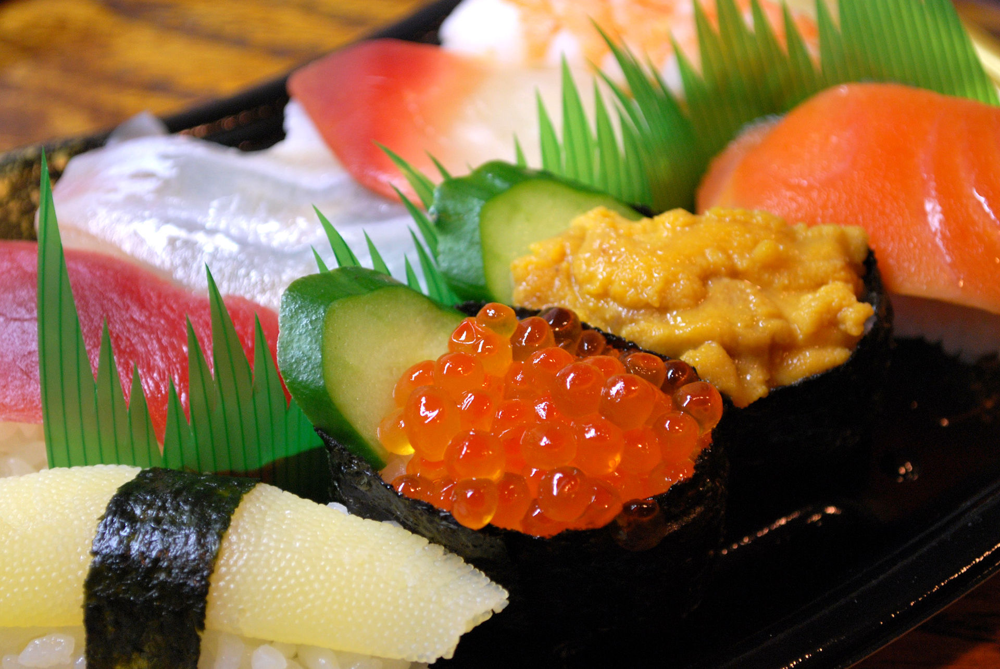

Sushi (寿司)

Prep time: 40 min
Cook time: 20 min
Total time: 1 hr 25 min
Ingredients with an * are optional
Ingredients
- 1/2 lb salmon (sushi grade)
- 1/2 lb tuna (sushi grade)
- Soy sauce
- 2 cups Japanese short grain rice
- 1/2 tsp salt
- 1/4 cup rice vinegar
- Wasabi of your choice
Steps
- Cook the rice
- Add the hot rice in large bowl
- Add rice vinegar, sugar, and salt
- Mix and let sit until cool
- Cut the fish against the grain
- Cut 3" long, 1" wide, and 1/4" thick
- Keep your hands wet with water
- Form mounds of rice
- Cup your hand and press with pointer and middle finger
- Press to compact the mound
- Once rice is formed place a dab of wasabi on rice
- Place fish on the mound and press gently
- Enjoy!
Back to home!